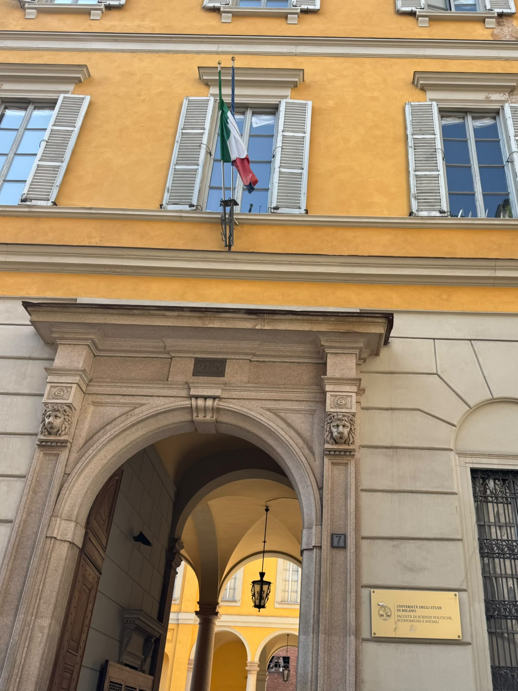

Welcome to the Course
The MA in COM offers a range of specialisations in the professional fields of public and corporate communications, marketing, advertising and political communications. The educational and cultural project of the course aims to provide an interdisciplinary training with a strong link to the industry and advanced tertiary sectors in the Italian and international contexts, and to public and political organisations.
Source: com.cdl.unimi.it
